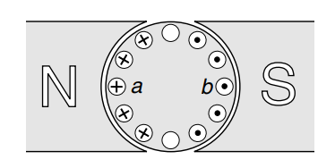
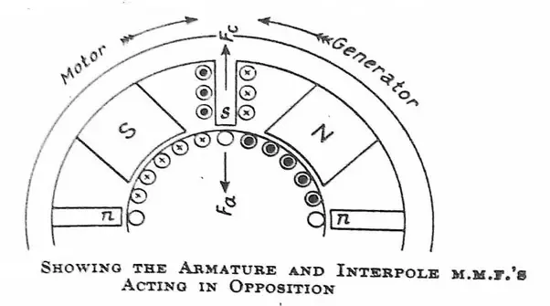
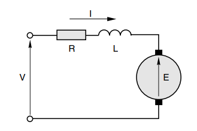
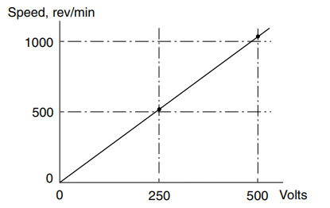
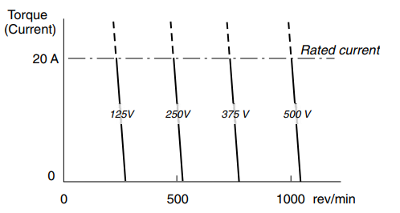
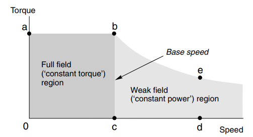
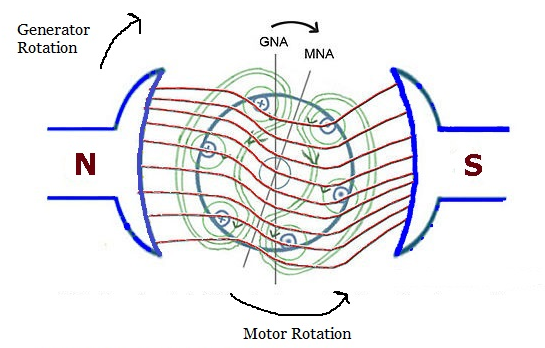
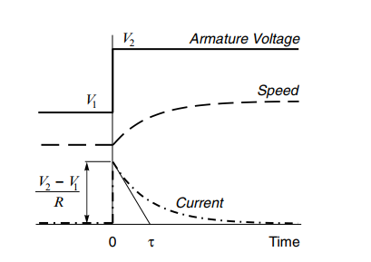
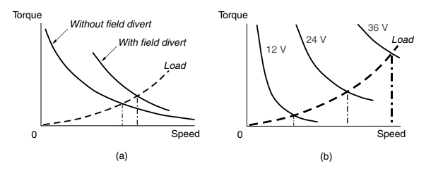

电机与驱动读书笔记（常规直流电机）
因为换向器的限制，一般直流电机的转速不超过3000rpm，小型的直流电机的转速可以高一些，可以达到12000rpm 左右。
电机的极对数决定着电机的转速，一般越大型的电机，极对数越多。
对于给定功率的直流电机，可以通过调整电枢绕组的圈数时期工作在不同的电压之下。例如：12V,4A的直流电机要想工作在24V 的输入电压之下，可以将电枢绕组增加一倍，电枢电流也就变成了2A。
励磁方式
一般电机的导磁材料是铁磁材料，因为易于制造，但性能不如稀土材料。稀土材料多用于性能要求较高的伺服电机。
- 永磁体：功率在数瓦特到数千瓦之间，体积小，无法通过调整励磁进行调速
- 励磁绕组：功率在数百瓦特到数兆瓦特之间，体积大
励磁是不做工的！！！
换向器
换向器可以让电枢无论处在哪个角度，其在每个磁极下的电流方向都是不变的。
随着电机的转动，每个磁极下的导线数量也在变化，但是由于我们的电枢绕组数量足够多，可以近似认为平滑，所以转矩也近似认为恒定。

换向极
因为电枢电感的作用，在换向器工作时容器产生火花危险。所以在大型的电机上一般会设置有换向极：在换向时提供磁通量以抵消产生感应电动势的磁通变化。电动机和发电机都有换向极，但是极性的设置刚好相反：

电磁转矩
虽然电磁转矩并不完全是通电导线产生的，但是大小却等于，于是对于电机来说，其总的电磁转矩为：
也就是说，给定的电机能产生多大的转矩，只与其励磁和和电枢电流有关。
反电动势
同理，电机的电枢绕组产生的反向电动势为：
其实线圈中的反电动势应当是矩形波，在每个磁极下保持恒定大小。
如果电机的励磁恒定，那么上面二式也可写作：
对于理想电机，，则有：
进而可得，在实际电机中，其相差一般不过几个百分点，可以近似认为相等。
等效电路

如图所示，电机的等效电路可以写作：
在稳定运行时，微分部分可以忽略不计。
直流电机的稳态特性
例题：已知永磁直流电机的额定参数为：，可以测得电枢电阻，空载时转速为，电枢电流为0.8A。
由以上参数，可得：
- 空载时。，可以求得，同时还可以考虑空载转矩
- 满载时。，还可得其输出转矩
如果输入电压下降一半，那么空载转速：因为空载转矩不变，所以空载电流也不变，那么电机的反电动势变为，与 时得反电动势 的比值等于其转速的比值。
所以我们可以绘制一条空载特性曲线：

带载特性
当电机满载时，转速为。随着负载的减小，电机转速会稍微增大直到空载。如果负载持续增大，则可能会烧毁电机。于是我们可以得到下面的负载特性曲线：

如果负载持续减小变成负值，则电机将工作在制动状态。当反电动势大于 的时候，电机将工作在发电状态。
从上面的例子可以看出，直流电机的转速计算只需用到反电动势即可。
减少励磁
永远不要在切断电枢电流之前停掉励磁。
在前面学到了，如果励磁减少，要达到相同的反电动势，则电机的转速会增加。如果励磁电流非常弱，那么电机的转速过大可能会造成危险的事故或者故障。
并且励磁减小之后，最大的电枢电流不能改变，则最大输出转矩也将同比减小。

电枢反应
因为电枢产生的磁场与励磁磁场叠加，导致磁极两边的磁场畸变、磁通大小不均衡。如果一侧的磁通饱和，则会等效于削弱励磁。这时需要一定的补偿措施或者增大气隙来矫正。

图片来源：https://electricallive.com/2014/03/effects-of-armature-reaction.html
最大输出功率
对于小电机而言，在转速为空载转速一半的时候。因为空载输出为0，堵转输出也为0，所以最大值在二者中间。但是效率只有。但其实还是以 为准。
暂态特性
当电机启动、或者负载突然变大时，电枢电流会增大，甚至烧毁电机。如果忽略电枢时间常数，当输入电压突变时，电枢电流会如下变化：
如图，四到五个机电时间常数之后即可认为电机到达稳定运行状态：

- 机电时间常数：
- 电枢时间常数： 堵转时的电流随时间变化
但实际上二者是共同作用的，于是形成一个二阶的系统（没有一个合适的公式存在）。幸运的是，在大多数情况下电枢时间常数要远小于机电时间常数，可以忽略不计。
串并联励磁
对于给定的转速和功率，串并联励磁并不能改变电机的体积大小和效率：
- 串联：起动转矩大。要求电阻要小，要求线径要比较粗
- 并联：励磁电压较大，要求线圈匝数多，电阻大
对于并联励磁来说，减小输入电压会造成励磁和电枢电流同时减小，但是电机转速却几乎不变，输出转矩（以二次函数）会减小。
对于串联励磁来说，如果保持电压不变，增加负载，则转速会减小。但是其空载转矩会很高，所以都不会工作在空载状态。
串联励磁的控制特性
如下图：

通用电机
因为串励电机的励磁与电枢电流会同时换向，所以其不仅能被直流电压驱动，也能被交流电压驱动。
电机的四种工作状态
- 正向拖动
- 正向制动
- 反向制动
- 反向拖动
关于制动时的电磁力，可以根据转速、反电动势求得。并不比感觉上小！